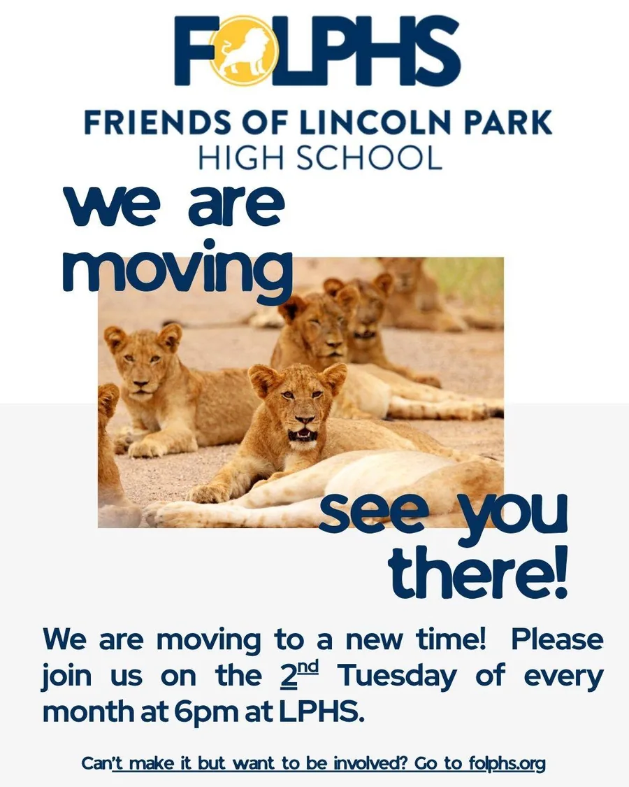

Stay in touch
Follow along with the Pride
News, events and photos from FOLPHS, plus parent groups where veteran LPHS families answer questions.
Follow us on Instagram
Instagram is where FOLPHS shares campaign updates, event photos and reminders.
Find support on Facebook
These LPHS groups offer parents support and access to “veteran” parents who can answer questions.

Attend our meetings
New time: the 2nd Tuesday of every month
FOLPHS meetings are held on the 2nd Tuesday of every month at 6:00 pm at LPHS. All are welcome, and it’s never too early to get involved. Look for meeting information in your email.
Can’t make it but still want to help? See how to get involved.